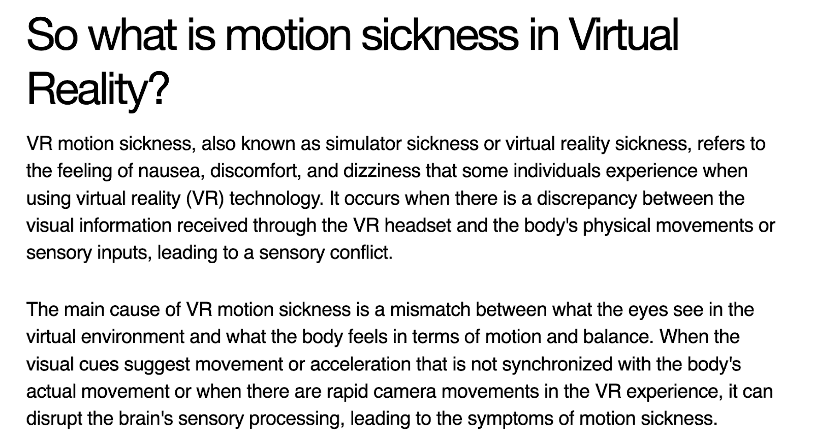
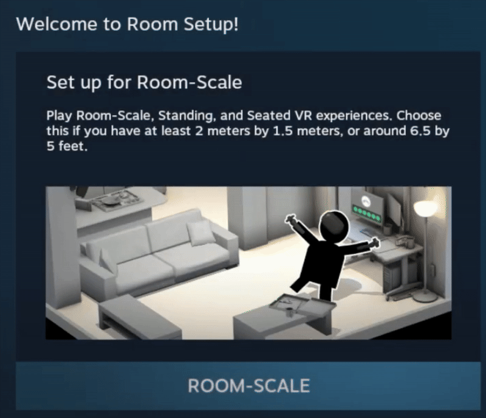
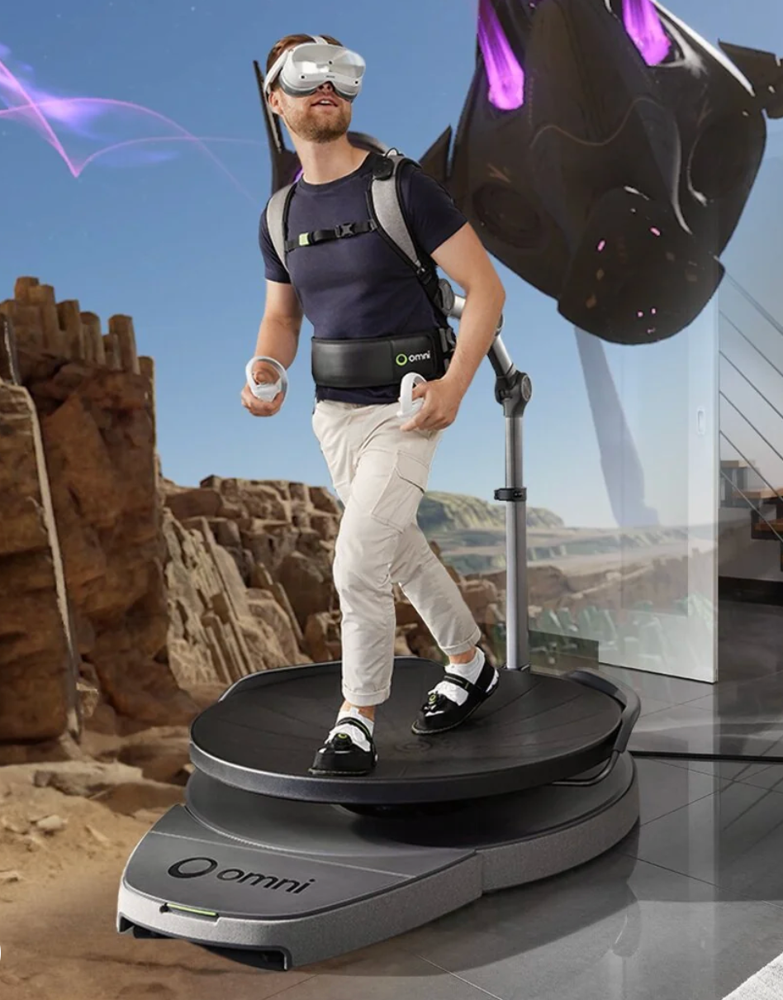
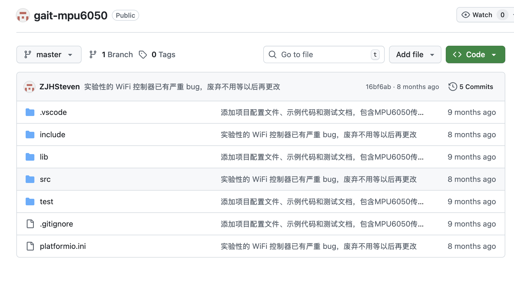

Author: Zeyu Liang
My project uses external sensors to convert users’ in-place walking movements into locomotion in a virtual environment. This allows users to move in VR without physically walking around, while still maintaining an immersive interaction experience.
Motion sickness is a common problem in virtual reality. It is mainly caused by the mismatch between what users see and what their bodies feel. When users move in VR using controllers or joysticks, the visual system detects movement, but the body does not experience real physical motion. This conflict can lead to dizziness, discomfort, and nausea.
HTC Vive Room-scale VR allows users to walk freely within a tracked physical space, and their real-world movement is directly mapped to the virtual environment. This method provides a natural and immersive experience. However, it usually requires a large play area, which limits its use in small indoor spaces.
Virtuix Omni is a VR treadmill system that allows users to walk in place while moving continuously in virtual environments. Although this system reduces the need for large walking areas, it depends on large mechanical structures and specialized hardware. As a result, it is expensive and not suitable for lightweight or portable setups.
These existing solutions reveal a clear trade-off between immersion and spatial constraints. Therefore, this project explores a space-efficient and low-cost locomotion approach that enables users to achieve continuous virtual movement through in-place walking, without relying on large physical spaces or heavy mechanical equipment.
MPU6050 gives raw data, and the biggest difficulty of this project is how to convert the raw data into more accurate step detection data. Since I did not have previous experience working with MPU6050, I searched for some projects online that are using this sensor. I found that most existing projects use MPU6050 for balance detection or wearable pedometers. Finally, I realized that pedometer projects could be a good reference for my work.
This is a video on YouTube that demonstrates step counting using MPU6050. This idea is similar to my project, but it mainly detects small body movements. However, leg movements are more complex and irregular, so I am not sure whether this method can be directly used in my project.
I accidentally found a project on GitHub. However, it stopped updating about 8 months ago because the developer could not fully solve the technical problems. From this repository, I learned that what I am currently trying to build can be considered a gait tracker. This discovery encouraged me to continue exploring this project.
This project explores an in-place walking locomotion method for VR using external sensors. Although there are still technical challenges, it has potential to provide a more natural and immersive movement experience in limited spaces.